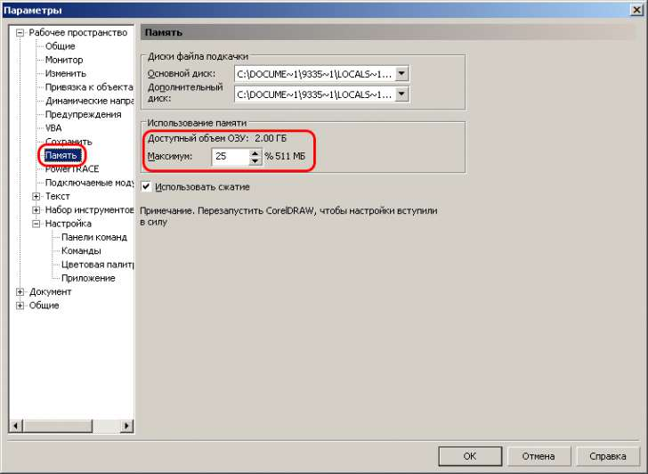

X3 долго грузится
sasha / 22.12.2008, 12:52/00:41
Форум:
Corel13 долго загружается.пустую страницу пол минуты создаёт, а если готовый файл то и минуты две над ним может думать(или это нормально?).
железо такое: Athlon x2 3600+, 2гб оперативы,
видео-RadeonHd 2600xt(512мб)
нажми при загрузке корки F8 сбрось настроики по умолчанию
дале следуй сюда

на F8 мой корел не откликается
но то что на картинке показано нашёл и поставил там сначала 25%, потом 100%, и ещё ставил 1%(каждый раз перезагружал корел, чтоб настройки вступили всилу), но на скорость создания страницы ни в одном случае это не повлияло
по идее в той настройке, лучше поставить меньше или больше процентов?
на F8 он влюбом случае реагирует, и жать F8 надо в момент загрузки корела а некогда он уже запущен
жму в момент загрузки(прям стучу!))-он не реагирует.
у меня на другом компе 12 корел установлен- там получется.
а на 13ом-нефига неполучается
пробовали переустоновить корел? вполне возможно что поможет если честно, я более не знаю, что вом посоветовать
если честно, я более не знаю, что вом посоветовать 
а вы не помните после чего он стал так работать???
сразу после установки так работал.
спасибо за всё
sasha, попробуйте переустановить не за что, особо ни чем и не помог
не за что, особо ни чем и не помог 
я ту проблему решил. вот ссылка, там патчик есть. работет как на 13, так и 14ом
http://www.talance.ru/articles/coreldraw-styles
sasha, спаибо
Самый действенный и простой способ(нашёл методом тыка!) В настройках удалите все воркспейсы(в стиле Иллюстратора, ворда) кроме дефаултного и создайте на его базе свой.... после этого корел грузится практически мгновенно...
Страницы